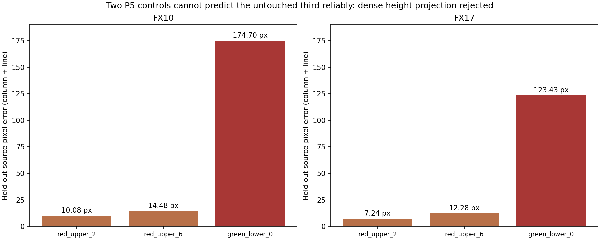

<script src="/research-assets.js"></script><!doctype html><html lang="en"><meta charset="utf-8"><meta name="viewport" content="width=device-width,initial-scale=1"><title>Height-dependent spectral mapping: failed held-out diagnostic</title><style>body{font:16px/1.6 system-ui;background:#f2f4f5;color:#182c38}main{max-width:1100px;margin:auto;padding:24px}section{background:white;border-radius:10px;padding:22px;margin:20px 0}.stop{background:#ffeddf;border-left:5px solid #a63d29}img{width:100%;height:auto}table{border-collapse:collapse;width:100%;font-size:14px}th,td{padding:8px;text-align:left;border-bottom:1px solid #d0dade}pre{white-space:pre-wrap;font:14px/1.6 system-ui}a{color:#076c87}.scroll{overflow:auto}</style><main><p><a href="../index.html">Shared metric calibration plane</a> · <a href="../scan_transfer_v1/index.html">Measured scan transfer</a></p><h1>Can three existing P5 features recover the missing height model?</h1><section class="stop"><strong>The held-out test fails. Dense surface projection is not supported.</strong><p>Two controls were used to fit the three missing height terms, while the third measured correspondence was left untouched for prediction. The errors reach 174.70 pixels for FX10 and 123.43 pixels for FX17.</p></section><section><div class="scroll"><table><thead><tr><th>Sensor</th><th>Untouched point</th><th>Error px</th><th>Column, line residual px</th><th>Normalized condition</th></tr></thead><tbody><tr><td>FX10</td><td>red_upper_2</td><td>10.08</td><td>-9.70, +2.73</td><td>4.9</td></tr><tr><td>FX10</td><td>red_upper_6</td><td>14.48</td><td>+10.36, -10.11</td><td>5.0</td></tr><tr><td>FX10</td><td>green_lower_0</td><td>174.70</td><td>+174.54, +7.43</td><td>145.0</td></tr><tr><td>FX17</td><td>fx17_track_red_upper_2</td><td>7.24</td><td>-7.01, +1.82</td><td>4.6</td></tr><tr><td>FX17</td><td>fx17_track_red_upper_6</td><td>12.28</td><td>+7.50, -9.73</td><td>4.7</td></tr><tr><td>FX17</td><td>fx17_track_green_lower_0</td><td>123.43</td><td>+123.17, +7.96</td><td>143.6</td></tr></tbody></table></div><p>The source spectra remain real recorded measurements. Their sparse spatial associations remain provisional; this failure prevents expanding them into a dense height-based spectral map.</p></section><section><h2>Evidence and interpretation</h2><p><a href="height_diagnostic.json">All controls, folds and sensitivity scenarios</a> · <a href="summary.json">Compact numeric results</a> · <a href="validation.json">Independent arithmetic checks</a></p><pre>BOUNDED HEIGHT-MODEL DIAGNOSTIC: FAILED GENERALIZATION

The known 25 mm board supports shared metric table-plane geometry. Static panel and paper controls support a small calibration-to-plant HSI scan-coordinate transfer. A separately reviewed, deduplicated paper-only RGB bridge provides an approximate calibration-camera-zero to plant-reference transform, with material conditioning and fold variation.

We tested whether these advances plus the three existing P5 feature correspondences could determine the three remaining height coefficients of a general linear pushbroom model. The plane model stays fixed. Each fold uses two P5 points to fit one line-height coefficient and two column-height coefficients, then predicts the untouched third point. Existing D405-localized points are scaled by the confirmed metric factor. Spectral source coordinates stay unchanged.

The model fails this test. FX10 held-out errors are 10.08, 14.48 and 174.70 pixels. FX17 errors are 7.24, 12.28 and 123.43 pixels. The two similar-height red points provide a poorly conditioned basis for predicting the distant green point: normalized condition numbers are 145.0 and 143.6. A single-coordinate 1 mm stress changes the green prediction by as much as 34.26 px for FX10 or 20.48 px for FX17. These stresses are explicit scenarios, not physical confidence bounds.

This is not fixed by claiming a small training error: two column-height coefficients can exactly fit two columns algebraically. It is also not evidence that a denser warp is justified. The available plane/frame assumptions, three source-feature correspondences and reconstructed point locations do not support this height model sufficiently. The test cannot uniquely attribute the failure to one element of that chain. It does not validate the previously provisional material identities.

DECISION
Do not use this fitted model to distribute spectra over the plant surface. Keep the six real source-pixel spectra at three manually/assistant-reviewed provisional P5 associations with their existing uncertainty labels. No new spectral point assignments or interpolated texture are created. The successful table-plane and scan-transfer diagnostics remain useful independent results.

NEXT EVIDENCE
Recover spatial camera intrinsics/rig geometry and/or record independently measured elevated controls spanning the plant volume and detector width. Establish calibration-to-plant frame transfer with broader or independently surveyed controls. Hold out whole heights or independent spatial groups. Verify feature identities and triangulated positions independently, especially beyond one plant. Use a physically constrained model and visibility checks before claiming dense 3D spectral fusion.

SAVED DETAILS
height_diagnostic.json retains every unchanged observed third point, prediction, residual vector, training identities, fitted coefficients, normalized singular values, and 35 sensitivity scenarios per fold: six RGB-frame variants, three plane-sheet variants, eighteen single-coordinate 1 mm stresses and eight training-pixel 1 px stresses. Six P5 folds were evaluated across both cameras. These are conditional geometry tests, not calibrated reflectance or physiology.
</pre></section></main></html>